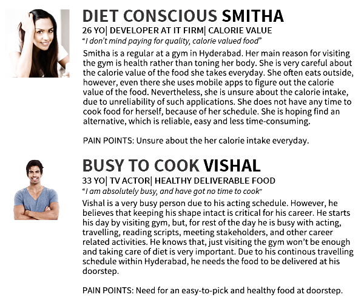
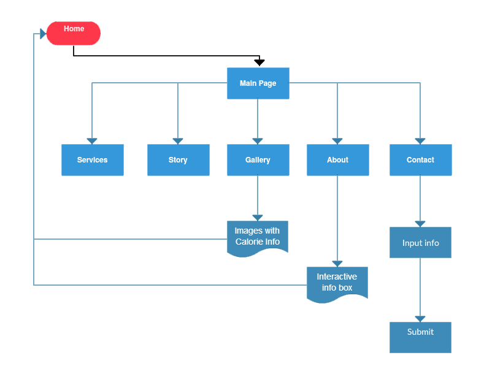
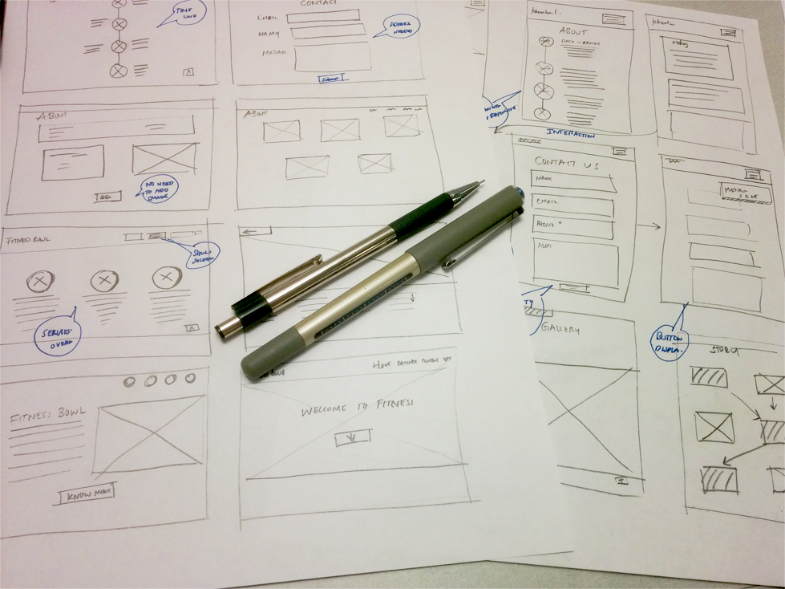
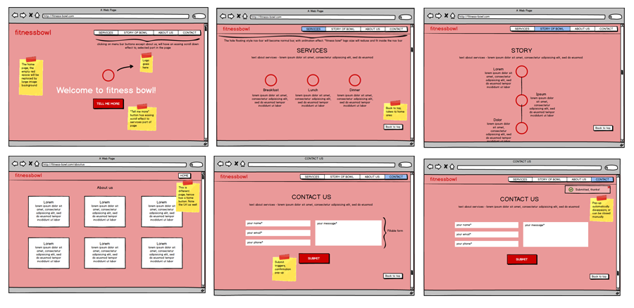
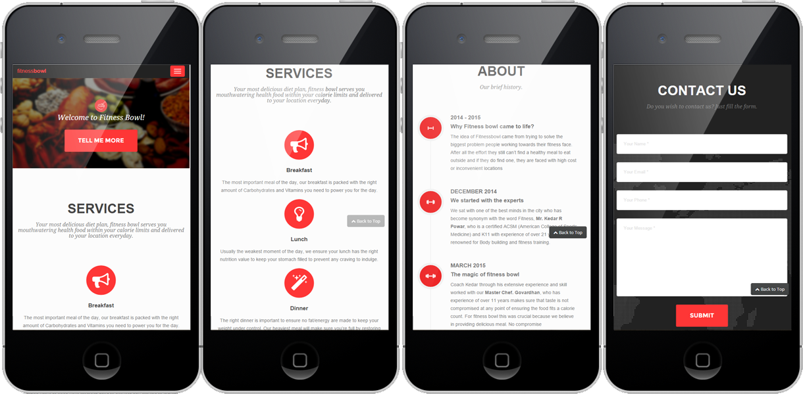

When client talked to me about developing the website to enforce his business plan, he mentioned that he had no idea about web development, UX or any of the stuff. Since I had some experience with UX design, I suggested some quick, less-expensive but reliable methods to implement his website. His main concentration was attracting customers and of course awe them with "Wow".

GOAL
To design and develop a website for Fitness-Bowl, where the central aim is promotion and a user friendly way to display food images and details, and services provided by the firm.
TEAM
I worked for a client on this project. My role was both UX researcher, designer and developer. My clients were involved in design phase.
Research
We started with market and current-trend analysis as a starting point. Yes, this was a great start to realize our goals realistically.
{kind=link}
SURVEY RESULTS
We collected data from over 20 participants, who were daily visitors of gym and under diet plan.
90%of the respondents visited gym regularly and cared about calories
75% of the participants were ready to pay monthly for food package
The image gallery in the website was one of important criteria for buying food from online sources
Participants preferred selection of food based on calories and variety
Participants cared more about professional opinion
They did not care much about cuisine but more about taste, while concentrating on calories
PERSONA
We ended up with lot of data points and designing for all those data points was quite difficult. An obvious answer was to create persona, in order to address large population accurately. These fictional characters helped us in visualizing our users in a realistic way.
{kind=link}

{kind=link}
USER FLOW
Now that we know whom to design for, our next challenge was to understand "what to design". We went back and forth to our goals, the ideas from the brainstorming, the vision of clients and persona reference to create the user flow diagram.
{kind=link}
Conceptual Design
This is where the excitement quadrupled! We have data, we have vision, and we have red bull-pencil-paper combo. Now, it was time to let the creativity flow!
SKETCHES

Conceptual design was used to create key components of the website such as about section, gallery section, and contacts etc. to generate multiple ideas. We explored different possibilities for behavior as well as some visceral concepts of the design.
Prototype
It was finally time to open my fresh edition of Balsamiq and AXURE, along with my magic wand (Phoenix feather core).
LOW-FIDELITY PROTOTYPE

{kind=link}
A Low-fidelity prototype was created using Balsamiq - an interactive Rapid prototyping tool. This was subjected to user-testing for finding interaction related issues. We also conducted cognitive walk-through to understand more issues. We evaluated mentally to understand what the possible issues in the design.
HI-FIDELITY PROTOTYPE
Hi-fidelity prototype was created using Photoshop and AXURE RP. It was annotated with issues that were found during the final round of usability testing. The methodology was agile in nature. Several visceral and behavioral issues were fixed after subjecting to testing, which is articulated below in the "Discovery section".
RESPONSIVE MODE

{kind=link}
This website is responsive as well, which automatically adjusts its screen size based on the device's screen size.
Usability Evaluation
A usability evaluation was carried out with 15 potential customers of website, using the high-fidelity prototype. The following are the summary of major issues that were addressed.
EVALUATION RESULTS
A usability evaluation was carried out with 15 potential customers of website, using the high-fidelity prototype. The following are the summary of major issues that were addressed.
Initial link as "more" was not impactful, so "Story of bowl" name was selected
The mail option was not sufficient, instead, address and contact mail was added
Services description was not visceral, instead a relevant icon and name was visceral
Tile in the "about us" section was better than circle display
A quick "up" button to reach home page was sought after as well
TAKEAWAYS
Never get too attached to your design: Yes! I had created so many innovative designs (or so I thought!), but client declined them for being complex or flashy in his mind.
Time: Even the time matters a lot. Because development period was short (6-8 months), trade-off on usability was not an option.
Benefits of design thinking: All the client stakeholders such as owner, social media marketing associates, investors and partners were involved in design thinking session. This tremendously helped me in getting aligned to their goals and visions. Further, they were very happy, that they were being involved in all the phases of design and development.
"Its just like seeing your kid growing up in front of you!" - a client mentioned after the release.Power of teamwork: Team work for concept design utilized many great ideas. They had some usability issues initially and I fixed all of them. In contrast to popular notion that visually rich user interfaces hamper the experience, this design proved beneficial for marketing. My client was often told that the gallery looked very delicious!
TOOLS
Adobe Edge Animate, Adobe Photoshop, Balsamiq, Paper Conceptual Design, Adobe Illustrator, Axure RP Pro, VISIO, Visual Studio